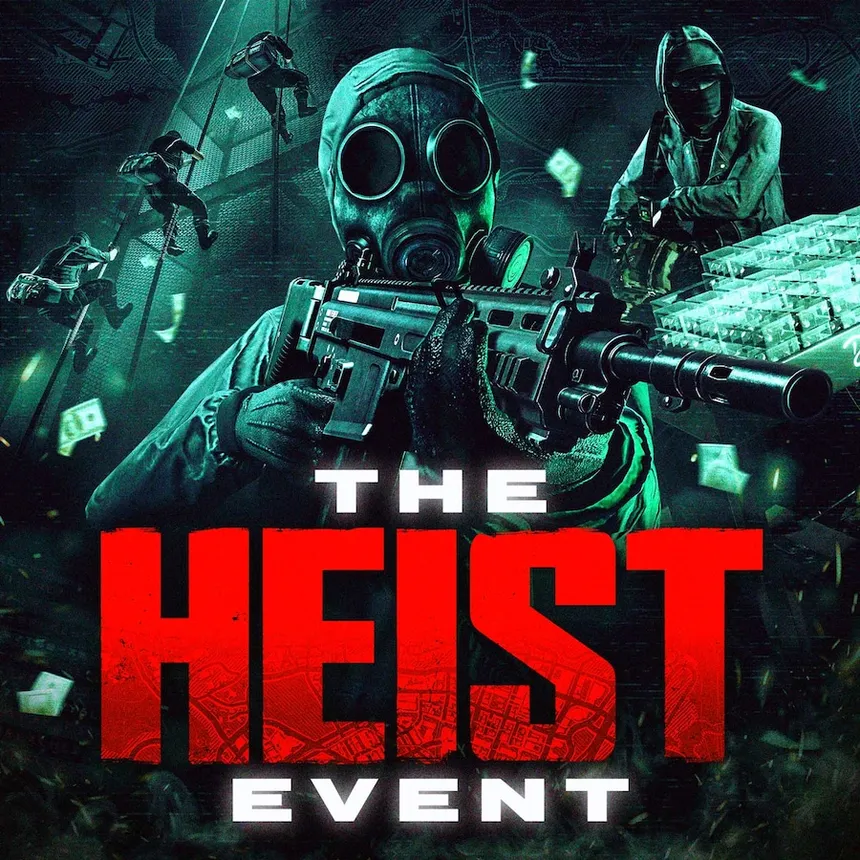
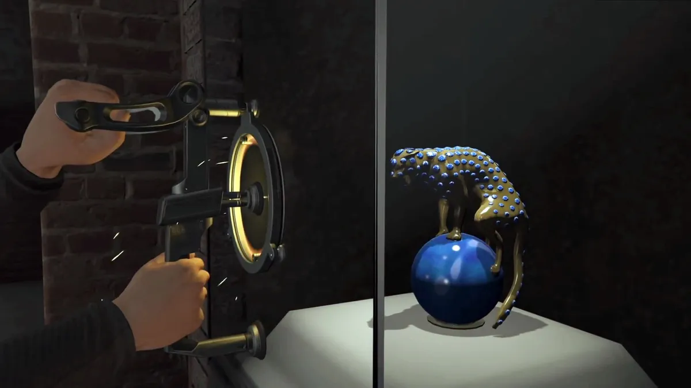

¡NUEVA SEMANA DE ATRACOS EN GTA ONLINE: EL CENTRO KORTZ, LA ESTATUA DE LA PANTERA Y MUCHAS RECOMPENSAS!
5 de noviembre de 2026

Rockstar Games vuelve a poner los atracos en el punto de mira de GTA Online con un evento especial que estará disponibledel 5 al 11 de noviembre. Esta semana tendremos diferentes bonificaciones, recompensas especiales y nuevas oportunidades para llenar nuestros bolsillos de GTA.
¡A POR LOS ATRACOS!
Para empezar, podremos reunir a nuestros amigos o a otros jugadores para completar diferentes golpes y conseguir recompensas adicionales. Rockstar ofrece bonificaciones por primera vez al completar todos los atracos originales,el Atraco del Juicio Final y el Atraco al Casino Diamond.
Además, llega el evento inaugural del Atraco al CentroKortz, que permitirá conseguir una obra de arte de realismo de mediados de siglo para decorar las paredes de nuestra mansión.
¡LA ESTATUA DE LA PANTERA VUELVE A CAYO PERICO!
Esta semana, la Estatua de la Pantera estará garantizada como objetivo principal durante la primera aproximación al complejo de Cayo Perico. ¡Una oportunidad perfecta para llevarnos un buen botín!

RECOMPENSAS DOBLES
También podremos conseguir el doble de GTA$ al completar por primera vez el golpe «No hay salida» durante esta semana.
Así que ya sabéis: reunid a vuestro equipo, preparad las armas y poneos manos a la obra. ¡Que esta semana toca atracar!